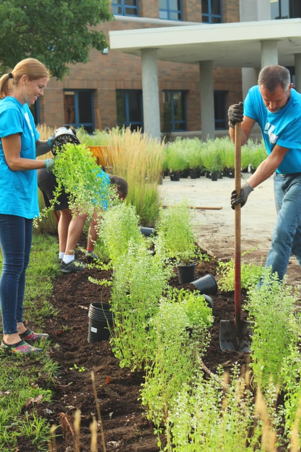

Purpose
- To promote character and the ability to serve the community in which the students lives.
- To build a postive attitude and working relationship with the community and Dulles High School.
About Us
The Y.E.S. program at Dulles High School is designed to allow students earn volunteer hours towards recognition at graduation to signify a completion of community service. This program allows students to give back to the community through direct involvement with various organizations & also recognizes those who have made a difference in their community.
The service performed can be any work that is voluntary and service-oriented but without pay. Please refer to our guidelines for clarification. A total of 100 hours or more must be documented in order to receive recognition.
Any student at Dulles High School may be in this program. The student will provide the agency with a Y.E.S. Form to be filled out by the agency & returned for documentation to receive credit. Alternatively, you can create an account and log your hours online. Forms can be downloaded from the menu below. If you are receiving credit from another club or organization, you cannot receive credit for Y.E.S. hours.
Contact Us
You can contact us via email with any questions or concerns. Organizations with volunteer opportunities are encouraged to contact us with information.
Email us here:support@dhsyesprogram.org
Documents
